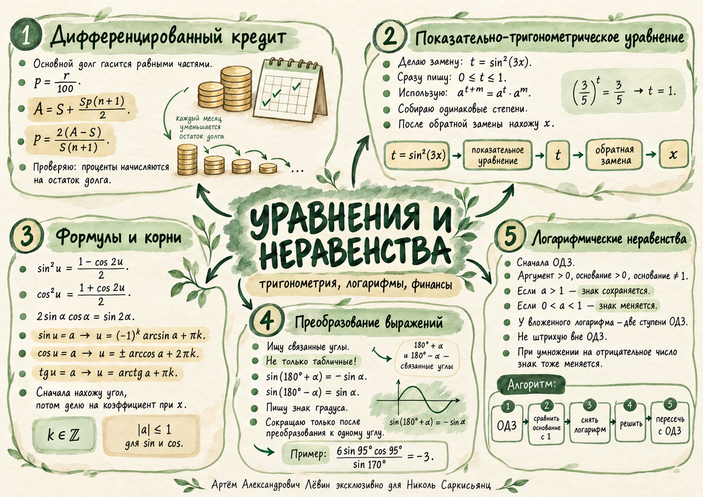

ЕГЭ · профильная математика · повторение
Уравнения
и неравенства
От распознавания структуры к точному ответу: финансовая модель, показательная замена, формулы корней и логарифмические ограничения.
Артём Александрович Лёвин · эксклюзивно для Николь Саркисьянц
Центральная идея
→ решение → пересечение
Для вложенного логарифма ограничения действуют на каждом уровне. Для тригонометрии после замены необходимо вернуться к исходной переменной.
01 / ФИНАНСЫ
Дифференцированный кредит
Основной долг уменьшается равными долями; проценты каждого периода начисляются на остаток до платежа.
Пример. Кредит 800 тыс. руб. на два года, общая выплата 968 тыс. руб.:
968 = 800 + 1200p
p = 0,14 → r = 14%
Каждый период возвращают S/n основного долга.
Начисляются на задолженность перед очередным платежом.
Период ставки должен совпадать с периодом платежей.
02 / ЗАМЕНА
Увидеть одинаковую степень
Замена t = sin²(3x) переводит смешанное уравнение в показательное, сохраняя ограничение 0 ≤ t ≤ 1.
Обозначьте t = sin²(3x), запишите 0 ≤ t ≤ 1.
Разложите степени: at+m = at·am.
Сгруппируйте одинаковые степени: 10·3t = 6·5t.
Получите (3/5)t = 3/5, откуда t = 1.
Возвращайтесь: sin²(3x) = 1, значит x = π/6 + πk/3, k ∈ ℤ.
03 / ТРИГОНОМЕТРИЯ
Формулы корней
Пусть k ∈ ℤ. Для sin u = a и cos u = a обязательно |a| ≤ 1.
| Уравнение | Общая формула |
|---|---|
| sin u = a | u = (−1)k arcsin a + πk |
| cos u = a | u = ± arccos a + 2πk |
| tg u = a | u = arctg a + πk |
| sin u = 0 | u = πk |
| cos u = 0 | u = π/2 + πk |
| sin u = 1 | u = π/2 + 2πk |
| cos u = −1 | u = π + 2πk |
Понижение степени. Если sin²(3x) = 1/4, то cos 6x = 1/2, а потому x = ±π/18 + πk/3.
04 / ПРИВЕДЕНИЕ
Общий угол вместо табличного
Используйте связанные углы по обе стороны от 180°, чтобы упростить дробь.
05 / НЕРАВЕНСТВА
Сначала область определения
Для logaU необходимо U > 0, a > 0 и a ≠ 1. Если 0 < a < 1, направление неравенства при снятии логарифма меняется.
log√3+1(log√3−1(2x−3)) > 0
Внутренний аргумент: 2x−3 > 0.
Внешний аргумент: log√3−1(2x−3) > 0. Так как 0 < √3−1 < 1, получаем 2x−3 < 1.
ОДЗ: 3/2 < x < 2. Внешнее основание √3+1 > 1, поэтому внутренний логарифм должен быть > 1.
2x−3 < √3−1 → x < (√3+2)/2. Пересечение с ОДЗ:
x ∈ (3/2; (√3+2)/2)
Цифровая лаборатория. Меняйте x и наблюдайте, когда оба логарифма определены и где неравенство выполняется. Перед проверкой попробуйте предсказать знак.
Исследовать ОДЗ ↗06 / ПАМЯТКА
Пять связей на одной карте
Финансовая модель, показательная замена, формулы корней, приведение и порядок решения логарифмического неравенства.


Вернитесь к карте после практики: проверьте, что каждое правило можно пояснить на собственном примере из занятия.
Открыть изображение в полном размере →07 / ПУТЬ А
Десять заданий
Самостоятельная тренировка. Решите задачи по возрастанию сложности, затем откройте ключ ответов.
Кредит 600 тыс. руб. взят на два года с равномерным уменьшением основного долга. Всего выплачено 726 тыс. руб. Найдите годовую ставку.
Вычислите 10sin80°cos80° / sin20°.
Вычислите 8sin110°cos110° / sin140°.
Решите sin²(3x) = 1/4.
Решите 3sin²(3x) + 32+sin²(3x) = 5sin²(3x) + 51+sin²(3x).
Решите (2/3)sin²(2x) = √(2/3).
Решите log3(x−1) > 1.
Решите log1/2(4x−3) ≥ −1.
Решите log√3+1(log√3−1(3x−5)) > 0.
Решите log2(log1/3(x−1)) ≤ 0.
Показать ответы к 10 заданиям
- 14% годовых
- 5
- −4
- x = ±π/18 + πk/3
- x = π/6 + πk/3
- x = π/8 + πk/4
- x ∈ (4; +∞)
- x ∈ (3/4; 5/4]
- x ∈ (5/3; (4+√3)/3)
- x ∈ [4/3; 2)
Для тригонометрических ответов k ∈ ℤ.
Самопроверка перед отправкой
Проверено 0 из 4
МАТЕРИАЛЫ
Сохранить и повторить
Учебное пособие и постер соответствуют занятию 19.10.2026.